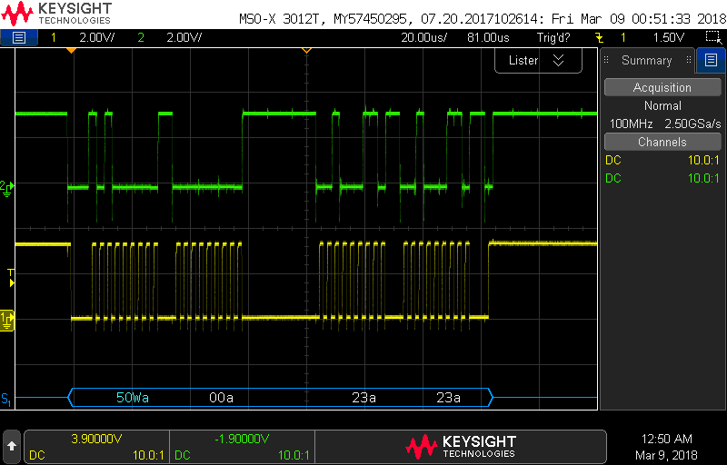

EENG 383
I2C setupInternal Subsystem
- Go to the "I2C Mode Overview" section of the PIC18(L)F2X/4XK22 Data Sheet found on the class web page. What are the names for the two signal connections to the I2C bus?
- What I/O pins are associated with each of the two Master Synchronous
Serial Port (MSSP) in the PIC? State your answer by completing the following
table. Hint, use the PIC pin summary in the PIC18(L)F2X/4XK22 Data Sheet.
MSSP SCLx SDAx 1 2 RB1
Firmware Organization
- In the INTERNAL OSCILLATOR area of the System Module window
- Oscillator Select: Internal oscillator block
- System Clock Select: FOSC
- Internal Clock: 16MHz_HFINTOSC
- Software PLL Enabled: Check
- In the Device Resources area of the project window, expand the Timer option. Double click TMR0,
- In the Device Resources area of the project window, expand the EUSART option. Double click EUSART1 [PIC10/PIC12/…],
- In the Device Resources area of the project window, expand the ADC option. Double click ADC [PIC10/PIC12/…],
- In the Device Resources area of the project window, expand the MSSP option. Double click MSSP2 [PIC10/PIC12/…].
- In the Project Resources area of the project window click on TMR0.
- Enable Timer: ✓
- Enable Prescaler: □
- Prescaler: 1:2 <Doesn't matter>
- Timer mode: 16-bit
- Clock Source: FOSC/4
- Timer Period: 500 us
- Enable Timer Interrupt ✓
- In the Project Resources area of the project window click on EUSART1.
- Enable EUSART: ✓
- Enable Transmit: ✓
- Enable Wake-up: □
- Auto-Baud Detection: □
- Enable Address Detect: □
- Baud Rate: 9600
- Transmission Bits: 8-bit
- Reception Bits: 8-bit
- Data Polarity: async_noninverted_sync_fallingedge
- Enable Continuous Receive: ✓
- Enable EUSART Interuupts: □
- Redirect STDIO to USART ✓
- In the Project Resources area of the project window click on ADC.
- Enable ADC: ✓
- Clock Source: FOSC/64
- Acquisition Time: 8
- Result Alignment: left
- Positive Reference: VDD
- Negative Reference: VSS
- In the Project Resources area of the project window click on MSSP2
- Mode: I2C Master
- Enable MSSP: ✓
- Enable SM Bus Input: □
- Slew Rate Control: High Speed
- SDA Hold Time: 100ns
- Baud Rate Generator Value: 0x27 <I2C Clock Frequency will change to 400kHz>
- Slave Address: 7 bit
- In the Project Resources area of the project window, click "Pin Module". The editor window will change from the System Module to Pin Module. Click on the Pin Manager tab in the console area. Click on Port C bit 0 and Port C bit 1 in the GPIO output row . The blue open lock should change to a green closed lock. Now in the Pin Module area, click on the Custom Name text box in the RC0 Pin Module row and change the name to "TEST_C0_PIN" and hit enter. Name RC1, "TEST_C1_PIN".
- Click File → Save All
- Leave the configuration file name as "MyConfig.mc3"
- Click on the "Generate" button in the Project Resources area of the project manager window. If you get a MCC pop-up asking you to confirm that the configuration has warnings, click Yes. The warning is about configuring CCP5 so that whenever its associated flag is set the ADC module performs a conversion - we will not enabling this feature, so we do not have to configure CCP5. In the MCC Save Configuration File, keep the defaults and Save. Remember that anytime that you make a change to the configuration you must re-generate the supporting files by clicking on the generate button,
- Click on the Project tab in the project manager window, expand the Source Files folder and double click main.c to open it in the editor window,
- Replace the contents of main.c with inlab09.c,
MCC Read Byte Interface
A read operation from the I2C takes place in two parts, a write (to set the starting address) and the read. The write operation (to set the starting address) happen first. Let's take a look at the code snippet below to see how this works. First we declare an array called pData, of 65 8-bit values (line r01). The first two bytes of pData are the populated with the I2C address (lines r02, r03). Next, the status flag is set for the write operation (line r04), the write to the I2C is performed (line r05), and the program waits for the write to complete (line r06). I call this write a "no-data" write, its purpose is only to set the address register inside the I2C. The address register is a register that stores the location of memory location that we are going to read or write. When you request to read data from the I2C, the address register contains the location of the first stored byte to read out of the I2C. Lastly, the status flag is set for the read (line r07), the read is performed (line r08), and the program waits for the read to complete (line r09).
r01. uint8_t pData[64];
r02. pData[0] = address>>8;
r03. pData[1] = (uint8_t) byteAddress;
r04. I2C_Wflag = I2C2_MESSAGE_PENDING;
r05. I2C2_MasterWrite(pData, 2, I2CDEVICE_I2C_ADDR, &I2C_Wflag);
r06. while(I2C_Wflag == I2C2_MESSAGE_PENDING);
r07. I2C_Wflag = I2C2_MESSAGE_PENDING;
r08. I2C2_MasterRead(pData, 1, EI2CDEVICE_I2C_ADDR, &I2C_Wflag);
r09. while(I2C_Wflag == I2C2_MESSAGE_PENDING);
Let's examine what is going on between the PIC and the I2C
during this process. To do this, we will use the I2C serial
decode function built into our Keysight oscilloscopes. Configure
your oscilloscope as follows:
| Ch1 probe | RB1 - SCL |
| Ch1 ground clip | Dev board ground loop |
| Ch1 (scale) | 2V |
| Ch2 probe | RB2 - SDA |
| Ch2 (scale) | 2V |
| Horizontal (scale) | 50 us |
| Trigger mode | Normal |
| Trigger source | 1 |
| Trigger slope | ↓ |
| Trigger level | 1.65V |
- Align Ch 1 on the third lowest reticule to make room for the I2C decode
- Align the horizontal position at the second left-most reticule,
- Convert serial stream
[Serial] → Mode → I2C
[Serial] → Serial → Serial S1: I2C ✓
[Serial] → Signals → SCL → 1
[Serial] → Signals → SDA → 2
[Serial] → Signals → Threshold → (Trigger Level) → 1.65V (for both SCL and SDA)
[Serial] → Address Size → 7 Bit
- Clear all menus off the bottom of the screen
[↑Back]

The serial decode on the oscilloscope uses letters and colors to describe the I2C bits. Blue and Yellow text denote control packets, while white text is data. Data values are represented in hexadecimal. Upper-case 'W' or 'R' denotes a read or write operation. Acknowledge bits are denoted with 'a' and no acknowledge with '~a'.
- Screen shot your oscilloscope with the decoded stream for a byte read.
- In the following table, relate the oscilloscope serial decode information
of an I2C from your byte read to the information contained in the 24LC256
technical documents for a random read shown in Figure 8-2. Note that our
byte read qualifies as a random read in the technical documents.
Figure 8-2 Control Byte Address High Byte Address Low Byte Control Byte Data Byte Oscilloscope serial decode
MCC Byte Write Interface
Unlike a byte read from the I2C, a byte write to the I2C occurs as a single transaction. After the control byte is sent indicating that the PIC wants to write to the I2C, the starting address of the write is sent in two bytes, followed by the data. However, the work of the I2C really starts after the entire I2C packet is received. The I2C must commit the data into its non-volatile memory. This commit can take several milliseconds. If we wanted to perform another read or write from the I2C immediately after this byte write, then we would need to poll the I2C, asking it when it was done committing the byte write. However, since this byte write is followed by prompting the user for input from the terminal, there is plenty of time for the byte write to commit, hence in this case we do not poll the I2C to determine if it has committed the byte write to its non-volatile memory.Go ahead and perform a byte write operation from PuTTY and observe the decoded serial data stream at the bottom of the oscilloscope. The following is an example oscilloscope capture.

- Screen shot your oscilloscope with the decoded stream for a byte write.
- In the following table, relate the oscilloscope serial decode information
of an I2C from your byte write to the information contained in the 24LC256
technical documents for a random write as shown in Figure 6-1.
Figure 8-2 Control Byte Address High Byte Address Low Byte Data Byte Oscilloscope serial decode